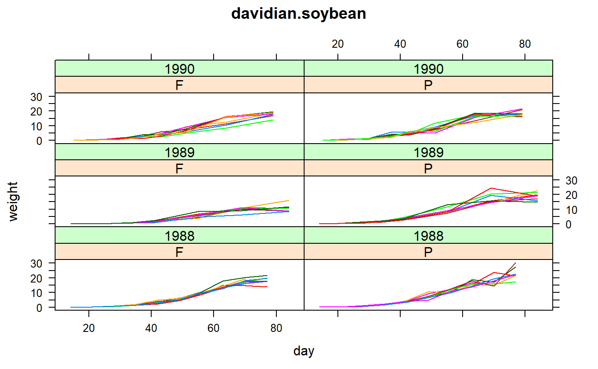

davidian.soybean.RdGrowth of soybean varieties in 3 years
data("davidian.soybean")
A data frame with 412 observations on the following 5 variables.
plotplot code
varietyvariety, F or P
year1988-1990
daydays after planting
weightweight of soybean leaves
This experiment compared the growth patterns of two genotypes of soybean varieties: F=Forrest (commercial variety) and P=Plant Introduction number 416937 (experimental variety).
Data were collected in 3 consecutive years.
At the start of each growing season, 16 plots were seeded (8 for each variety). Data were collected approximately weekly. At each timepoint, six plants were randomly selected from each plot. The leaves from these 6 plants were weighed, and average leaf weight per plant was reported. (We assume that the data collection is destructive and different plants are sampled at each date).
Note: this data is the same as the "nlme::Soybean" data.
Marie Davidian and D. M. Giltinan, (1995). Nonlinear Models for Repeated Measurement Data. Chapman and Hall, London.
Electronic version retrieved from https://www4.stat.ncsu.edu/~davidian/data/soybean.dat
Pinheiro, J. C. and Bates, D. M. (2000). Mixed-Effects Models in S and S-PLUS. Springer, New York.
# \dontrun{ library(agridat) data(davidian.soybean) dat <- davidian.soybean dat$year <- factor(dat$year) libs(lattice) xyplot(weight ~ day|variety*year, dat, group=plot, type='l', main="davidian.soybean")# The only way to keep your sanity with nlme is to use groupedData objects # Well, maybe not. When I use "devtools::run_examples", # the "groupedData" function creates a dataframe with/within(?) an # environment, and then "nlsList" cannot find datg, even though # ls() shows datg is visible and head(datg) is fine. # Also works fine in interactive mode. It is driving me insane. # reid.grasses has the same problem # Use if(0){} to block this code from running. if(0){ libs(nlme) datg <- groupedData(weight ~ day|plot, dat) # separate fixed-effect model for each plot # 1988P6 gives unusual estimates m1 <- nlsList(SSlogis, data=datg, subset = plot != "1988P6") # plot(m1) # seems heterogeneous plot(intervals(m1), layout=c(3,1)) # clear year,variety effects in Asym # A = maximum, B = time of half A = steepness of curve # C = sharpness of curve (smaller = sharper curve) # switch to mixed effects m2 <- nlme(weight ~ A / (1+exp(-(day-B)/C)), data=datg, fixed=list(A ~ 1, B ~ 1, C ~ 1), random = A +B +C ~ 1, start=list(fixed = c(17,52,7.5))) # no list! # add covariates for A,B,C effects, correlation, weights # not necessarily best model, but it shows the syntax m3 <- nlme(weight ~ A / (1+exp(-(day-B)/C)), data=datg, fixed=list(A ~ variety + year, B ~ year, C ~ year), random = A +B +C ~ 1, start=list(fixed= c(19,0,0,0, 55,0,0, 8,0,0)), correlation = corAR1(form = ~ 1|plot), weights=varPower(), # really helps control=list(mxMaxIter=200)) plot(augPred(m3), layout=c(8,6), main="davidian.soybean - model 3") } # end if(0) # }